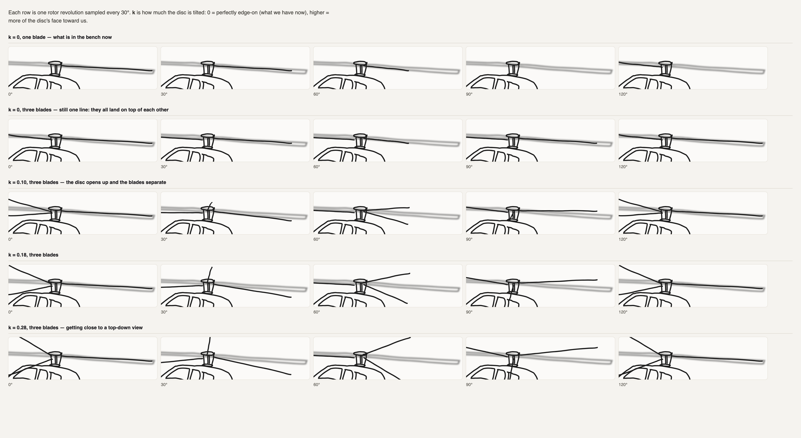
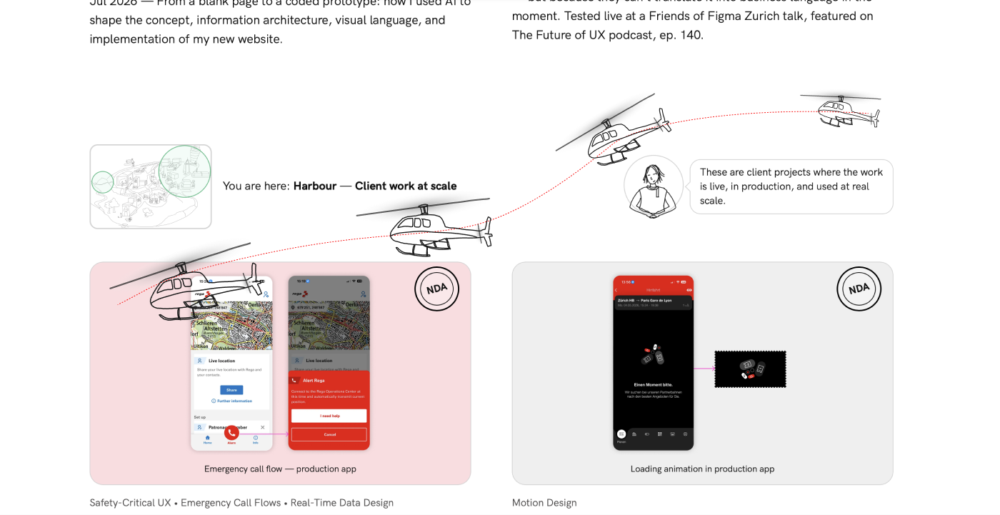
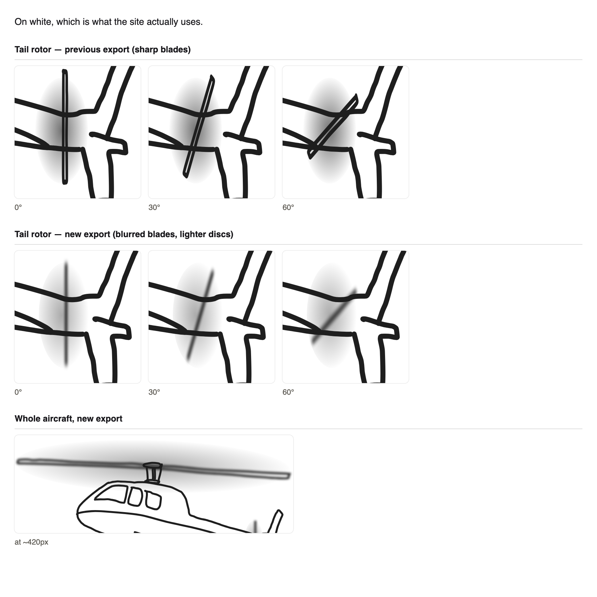

Building the Rega helicopter: a rotor that turned out to be geometrically impossible as first drawn, a flight path recovered from four poses in Figma, and a long argument with what “responsive” means when the thing being laid out is motion rather than a box.
The Rega avatar has had a wind reaction since August, built with a placeholder trigger because the thing that was supposed to cause it didn’t exist yet. This session built that thing: a helicopter that flies in over the Harbour row, blows her hair as it passes, and settles on the Rega card. Nearly all the difficulty was in two places — making a side-on rotor read as spinning, and making one hand-drawn flight path work at every viewport width.
Decisions
Rotors
Blades foreshorten (scaleX), they do not rotate
A rotor spins about a vertical mast; seen from the side that circle projects to a flat ellipse, so a blade sweeps out to full span at the sides and collapses to nothing pointing at the viewer. Animating rotate reads as a windmill. Rejected after the first attempt looked wrong and neither of us could say why.
Rotors
The disc has to be drawn with real tilt — a flat line cannot work at any blade count
At zero tilt every blade projects onto the same segment, so three blades render pixel-identical to one. This was proven rather than argued (see figure), which is what made it obvious the fix was in the drawing, not the code. Flore redrew the disc as an ellipse with a gradient.
Flight path
The path, the scale and the rotation all came out of Figma, not out of code
Flore traced the curve and placed four helicopter instances along it at the size and angle she wanted. Solving each instance’s bounding box back into (width, angle) recovered widths of exactly 120 / 170 / 200 / 220 and angles matching the curve’s own tangent within a few degrees. Round numbers are the tell that the solve is right rather than merely plausible.
Flight path
Rotation = path tangent, so there is no “bank” parameter
Falls straight out of the pose table above: the nose points where it is going. An invented bank slider would have been a knob with no source of truth behind it.
Timing
Ease the path sampling, run the animation linear
Handing WAAPI an easing makes keyframe offsets path progress, so under deceleration the last sliver of path eats most of the clock: measured, the aircraft covered 34% of the route in the first 10% of the time and spent 55% of the duration inside the final 12% of the path — over half the animation was a near-stationary helicopter dissolving. Every ease-out tested had the same shape, so it was structural rather than a value to tune.
Responsive
Rega became an anchor of the curve, not something it passes near by luck
The curve’s height came from section width; her position doesn’t. They agreed at desktop by coincidence. At 768 the closest approach to her was the first frame — it flew away from her for the whole flight and the gust fired before anything happened. Pinning the curve’s first interior anchor to her and the end to the card leaves two unknowns and two equations, so it is solved rather than fitted.
Attitude
Flare level before the fade; cap the dive at 40°
Flore: “it would avoid this feeling that the helicopter is going to crash.” Real helicopters flare out of a descent for the same reason. Levelling by the time the fade starts, not by the end, so the corrected moment is the last thing clearly visible. The clamp came from measuring the flare: the peak dive ran −36° at 1440 but −72° at 640 — essentially vertical.
Fill
Fill the fuselage at 36% white rather than leave it outline-only
The rotor disc is drawn before the body, so its grey gradient showed through the cabin. Translucent rather than solid so the card’s pink still comes through — it reads as frosted rather than as a white cut-out, which suits a line drawing.
Stroke
Derive the helicopter’s stroke from the avatar at run time instead of picking a number
Measured, the avatar rendered at 1.048px and the helicopter at 1.606px — 53% heavier. One constant can’t fix it: apparent stroke is authored width × render scale, and the avatar steps 96/106/118px at breakpoints while the helicopter is a fraction of a continuously-resizing card. Matching desktop needs 2.61 viewBox units; 768 needs 3.50.
The thing that made the rotor work
the proof

Why more blades didn’t help — each row is one revolution sampled every 30°; k is how much the disc is tilted toward the viewer. The top two rows are one blade and three blades at k = 0, and they are identical — at zero tilt every blade projects onto the same line, so adding blades changes nothing. Only once the disc opens up (k = 0.10 and beyond) do they separate. This is what turned “the rotor looks wrong” into a specific request to redraw the disc.
The flight path, specified as drawing rather than as description
the brief

Four poses on a traced curve — instead of describing the motion, Flore drew it: one path plus four instances placed along it. Because a rotated instance’s bounding box encodes both its size and its angle, all of it was recoverable exactly — widths of 120/170/200/220 and angles tracking the tangent. This turned out to be by far the most efficient way she has specified motion so far.
Re-exporting to fix weight, not code
before / after

Tail rotor, previous vs re-exported — the tail read as heavier and more prominent than the main rotor. The fix was in Figma (blur the blades, lighten the discs), not in the animation. Worth noting the first diagnosis was wrong: it looked like a code problem and two rounds were spent there before the export turned out to be the cause.
What broke, and how
| Problem | Cause | Resolution |
|---|
vector-effect: non-scaling-stroke rendered the tail stroke 3× too thick |
It makes stroke-width mean screen pixels, ignoring the viewBox scale — so 4 became 4.00px instead of the intended 1.25px. |
Dropped the whole squash approach for rotate() scaleY(), which needs no such trick. Measured at 8× device scale to confirm. |
| The aircraft climbed while descending |
It is drawn nose-left, so its forward axis is −x. The usual atan2(dy, dx) reads leftward travel as ~180°, which inverts the sign. |
Measure from −x, and keep the sign flip in one function rather than at the call site — it was got backwards once already. |
| Landing point drifted 34% → 28% down the card between runs |
The card grows when its thumbnail decodes, with no resize event, so the flight stayed anchored to a stale measurement. |
ResizeObserver on the card rather than a window listener; if the box changes mid-flight it re-parks at the end instead of restarting under the viewer. |
| Gust fired 1.4s after the helicopter had passed |
Triggering on duration × passAt assumes linear time; under ease-out it reached her at 0.8s while the timer said 2.25s. |
Fire off the animation’s own progress, not a timer. |
| Rega’s gust had never once been visible |
The test bench set data-wind="true" correctly, but the real animation is scoped to [data-component='avatar-rega'] and the bench’s copy of the avatar lacked that attribute. |
Bench now uses the shipping CSS verbatim. The lesson generalises: a bench that reimplements what it is testing can quietly disagree with the real thing. |
Mistakes worth remembering
Two full sessions of helicopter work were built on a branch 12 commits behind main.
The branch was cut from a commit that predated the four new avatars, the go-live work (custom domain, link previews, analytics) and several fixes. It only surfaced when Flore noticed localhost looked out of date — “the localhost is an outdated version (e.g. avatars)” — and by then everything had been built and reviewed against a stale page. It resolved cleanly (the branch had no commits of its own, so it fast-forwarded and the work re-applied with two conflicts), but the review time spent looking at the wrong page is gone. Next time: check the branch is current before starting, not after something looks wrong.
“It can’t interact with Rega on mobile” got over-applied into “no helicopter on mobile.”
On narrow viewports the Guide wraps and Rega ends up left of the card’s landing point, so a curve that both passes her and lands on the card cannot exist — at 375 there is ~48px of usable travel for a 137px aircraft. That part is a real constraint. Grounding the aircraft entirely was the wrong conclusion drawn from it, and Flore caught it: “the helicopter is not visible on mobile.” Losing the choreography is a much smaller loss than losing the aircraft.
What this taught us about the Figma file
Draw the motion, don’t describe it
Placing sample poses along a path is the highest-bandwidth way to specify an animation so far. A rotated instance’s bounding box encodes size and angle, both recoverable exactly. Far better than adjectives.
Every re-export moves the geometry
Pivots and hub positions measured from one export are invalidated by the next. Anything measured off the artwork needs re-checking after a re-export — or deriving at run time instead.
Export hygiene, again
Live paths not expanded strokes; nothing hidden (hidden layers don’t export); “Include id attribute” on. Same list as the avatar sessions — it keeps costing time until it’s habit.
Background blur has a specific meaning
Figma’s background blur exports as a foreignObject with backdrop-filter — blurring what is behind the shape. Not the same as layer blur, and expensive on something animating every frame.
Ratios beat numbers
Sizes and positions expressed as fractions of a real element (the Rega card, the avatar’s own width) survive every breakpoint. Anything expressed in pixels was wrong somewhere within an hour.
Verify by measuring, not by looking
Nearly every real bug here was invisible by eye and obvious once measured — the 55%-of-duration fade, the first-frame closest approach, the 53% stroke mismatch.
Where it landed working
| Viewport | Passes Rega at | Peak dive | Lands |
|---|
| 1440 | 0.56 avatar-widths | −37.2° | 25% / 34% |
| 1024 | 0.50 | clamped −40° | 25% / 34% |
| 768 | 0.46 | clamped −40° | 25% / 34% |
| 640 | 0.39 | clamped −40° | 25% / 34% |
| 375 | 2.67 — flies past at a distance | −35.8° | 25% / 34% |
Level (0°) by 72% of the flight at every width, and the line weight matches the avatar exactly (ratio 1.000) at all five. The open question is the mobile row: the gust still fires when the helicopter is most of a screen away, which will read as unmotivated. Either drop her reaction below ~640, or accept it.
Shareable hook
I asked for a helicopter animation and got a geometry lesson: a rotor seen from the side doesn’t rotate, it foreshortens — and if you draw its disc as a flat line, three blades render pixel-for-pixel identical to one. The fix wasn’t in the code. It was redrawing the disc with a few degrees of tilt.